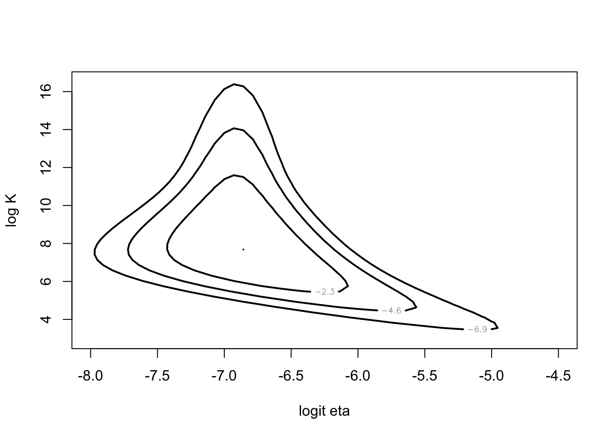
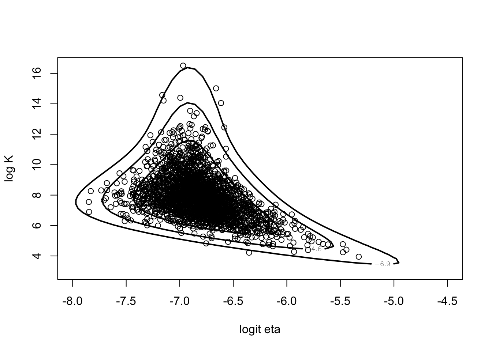
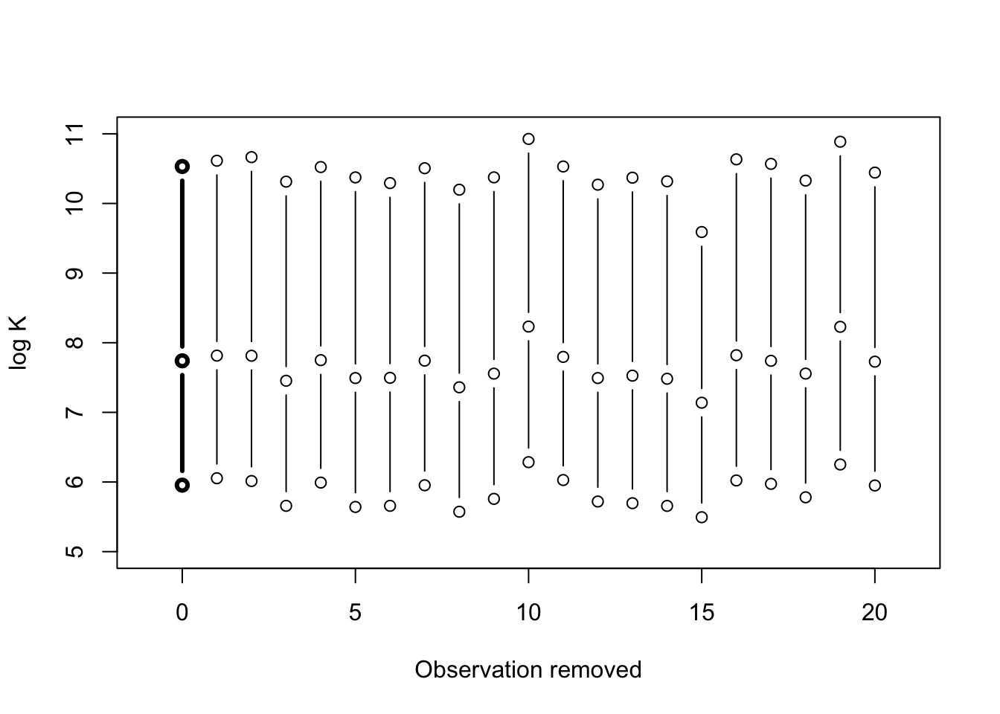

Chapter 5 Introduction to Bayesian Computation
5.1 A Beta-Binomial Model for Overdispersion
library(LearnBayes)First consider posterior of \((\eta, K)\).
mycontour(betabinexch0,
c(.0001, .003, 1, 20000),
cancermortality,
xlab="eta", ylab="K")
Instead look at posterior of \((\log \frac{\eta}{1-\eta}, \log I\).
mycontour(betabinexch,
c(-8, -4.5, 3, 16.5),
cancermortality,
xlab="logit eta", ylab="log K")
5.2 Approximations Based on Posterior Modes
fit <- laplace(betabinexch,
c(-7, 6),
cancermortality)
fit## $mode
## [1] -6.819793 7.576111
##
## $var
## [,1] [,2]
## [1,] 0.07896568 -0.1485087
## [2,] -0.14850874 1.3483208
##
## $int
## [1] -570.7743
##
## $converge
## [1] TRUEnpar <- list(m=fit$mode, v=fit$var)
mycontour(lbinorm,
c(-8, -4.5, 3, 16.5),
npar,
xlab="logit eta", ylab="log K")
se <- sqrt(diag(fit$var))
fit$mode - 1.645 * se## [1] -7.282052 5.665982fit$mode + 1.645 * se## [1] -6.357535 9.4862395.3 Monte Carlo Method for Computing Integrals
Illustration of a simple estimate of an integral by Monte Carlo.
p <- rbeta(1000, 14.26, 23.19)
est <- mean(p ^ 2)
se <- sd(p ^ 2) / sqrt(1000)
c(est,se)## [1] 0.150436813 0.0019853565.4 Rejection Sampling
Using rejection sampling for the overdispersion posterior with a multivariate t proposal density.
fit <- laplace(betabinexch,
c(-7, 6),
cancermortality)betabinT <- function(theta, datapar){
data <- datapar$data
tpar <-datapar$par
d <- betabinexch(theta,data) -
dmt(theta, mean=c(tpar$m),
S=tpar$var, df=tpar$df, log=TRUE)
d
}tpar <- list(m=fit$mode, var=2 * fit$var, df=4)
datapar <- list(data=cancermortality, par=tpar)start <- c(-6.9, 12.4)
fit1 <- laplace(betabinT, start, datapar)
fit1$mode## [1] -6.888963 12.421993betabinT(fit1$mode, datapar)## [1] -569.2829theta <- rejectsampling(betabinexch,
tpar,
-569.2813,
10000,
cancermortality)
dim(theta)## [1] 2438 2mycontour(betabinexch,
c(-8, -4.5, 3, 16.5),
cancermortality,
xlab="logit eta", ylab="log K")
points(theta[,1],theta[,2])
5.5 Importance Sampling
fit <- laplace(betabinexch,
c(-7, 6),
cancermortality)Posterior density of \(\log K\)$ conditional on a value of \(\eta\).
betabinexch.cond <- function (log.K, data){
eta <- exp(-6.818793) / (1 + exp(-6.818793))
K <- exp(log.K)
y <- data[, 1]
n <- data[, 2]
N <- length(y)
logf <- 0 * log.K
for (j in 1:length(y)){
logf = logf + lbeta(K * eta + y[j],
K * (1 - eta) + n[j] - y[j]) -
lbeta(K * eta, K * (1 - eta))
}
val <- logf + log.K - 2 * log(1 + K)
exp(val-max(val))
}Illustrate different choices of importance sampler.
I <- integrate(betabinexch.cond, 2, 16,
cancermortality)
par(mfrow=c(2, 2))
curve(betabinexch.cond(x,
cancermortality) / I$value,
from=3, to=16,
ylab="Density", xlab="log K", lwd=3, main="Densities")
curve(dnorm(x, 8, 2), add=TRUE)
legend("topright",
legend=c("Exact", "Normal"),
lwd=c(3, 1))
curve(betabinexch.cond(x,
cancermortality) / I$value /
dnorm(x, 8, 2), from=3, to=16, ylab="Weight", xlab="log K",
main="Weight = g/p")
curve(betabinexch.cond(x,
cancermortality) /I$value,
from=3, to=16,
ylab="Density", xlab="log K",
lwd=3, main="Densities")
curve(1 / 2 * dt(x - 8, df=2), add=TRUE)
legend("topright", legend=c("Exact", "T(2)"), lwd=c(3, 1))
curve(betabinexch.cond(x,
cancermortality) / I$value /
(1 / 2 * dt(x - 8, df=2)),
from=3, to=16,
ylab="Weight", xlab="log K",
main="Weight = g/p")
tpar <- list(m=fit$mode,
var=2 * fit$var,
df=4)
myfunc <- function(theta){
return(theta[2])
}
s <- impsampling(betabinexch,
tpar,
myfunc,
10000,
cancermortality)
cbind(s$est, s$se)## [,1] [,2]
## [1,] 7.926348 0.018913075.6 Sampling Importance Resampling
Illustrate using the SIR algorithm for the beta-binomial density with a multivariate t proposal density.
fit <- laplace(betabinexch,
c(-7, 6),
cancermortality)tpar <- list(m=fit$mode,
var=2 * fit$var, df=4)theta.s <- sir(betabinexch,
tpar, 10000,
cancermortality)Use SIR to examine the sensitivity of the posterior inference to removal of individual observations.
S <- bayes.influence(theta.s, cancermortality)
plot(c(0, 0, 0), S$summary,
type="b", lwd=3, xlim=c(-1, 21),
ylim=c(5, 11),
xlab="Observation removed", ylab="log K")
for (i in 1:20){
lines(c(i, i, i), S$summary.obs[i, ], type="b")
}